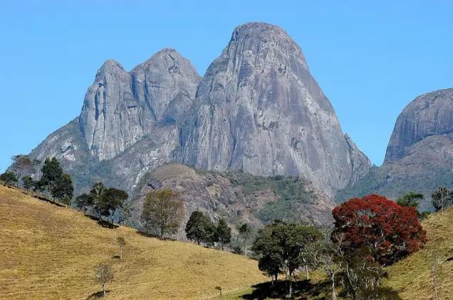
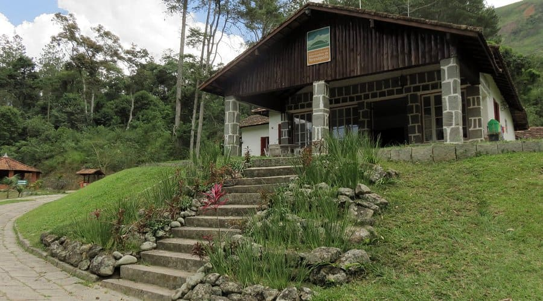
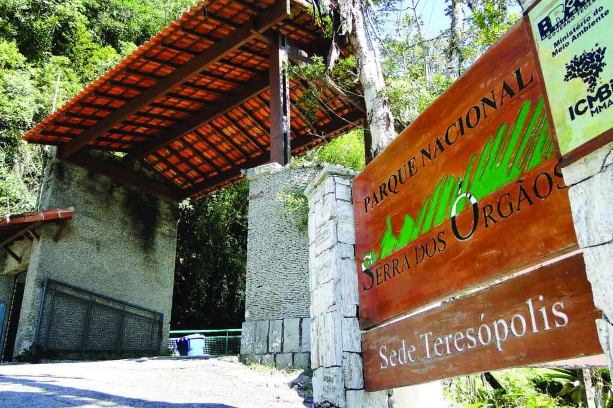

Bem-vindo ao Terê Verde Online
Apaixone-se pela beleza ímpar de Teresópolis, um refúgio natural encravado no coração da Serra dos Órgãos. O Terê Verde é o seu guia completo para descobrir as atrações naturais que tornam esta cidade um destino especial. De imponentes picos a cachoeiras cristalinas, de trilhas em meio à Mata Atlântica a mirantes com vistas panorâmicas, prepare-se para vivenciar experiências inesquecíveis em contato direto com a natureza. Explore nosso site e planeje sua próxima aventura no paraíso verde de Teresópolis!Principais Pontos Turisticos:
- Parque Nacional da Serra dos Órgãos
- Parque Estadual dos Três Picos
- Parque Natural Municipal Montanhas de Teresópolis
Veja mais sobre os pontos turisticos abaixo, caso queira saber mais sobre eles, clique no botão no fim do texto.

Parque Estadual dos Três Picos
O Parque Estadual dos Três Picos é uma unidade de conservação localizada na Serra dos Órgãos, no estado do Rio de Janeiro, Brasil. Com uma área de aproximadamente 20.000 hectares, o parque abriga uma rica biodiversidade e paisagens deslumbrantes, incluindo montanhas, vales e cachoeiras. É um destino popular para trilhas, escaladas e observação da fauna e flora locais. O parque é conhecido por suas imponentes formações rochosas, como o Pico Maior, o Pico do Frade e o Pico do Papagaio, que atraem aventureiros e amantes da natureza. Além disso, a região é lar de diversas espécies de plantas e animais, incluindo algumas ameaçadas de extinção. O Parque Estadual dos Três Picos é um local ideal para quem busca contato com a natureza, oferecendo trilhas de diferentes níveis de dificuldade, áreas para camping e vistas panorâmicas deslumbrantes. É um destino imperdível para os amantes do ecoturismo e da aventura.

Parque Natural Municipal Montanhas de Teresópolis
O Parque Natural Municipal Montanhas de Teresópolis é uma joia ecológica estrategicamente localizada, tornando-se um refúgio de natureza e tranquilidade de fácil acesso para moradores e visitantes da cidade. Diferente dos parques maiores e mais distantes, este parque foi criado para oferecer um contato mais próximo e imediato com a natureza exuberante da Mata Atlântica. Com trilhas leves e moderadas, o parque é ideal para caminhadas relaxantes, piqueniques em família e para simplesmente apreciar a paisagem. De seus pontos mais altos, é possível ter uma vista panorâmica deslumbrante de Teresópolis e do majestoso conjunto de montanhas que a cercam, incluindo as icônicas formações da Serra dos Órgãos.
